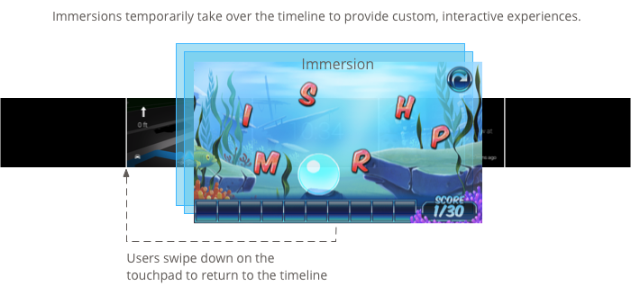

Immersions give you more ways to consume user input and create user interfaces. This allows you to create the most custom experience, but involves the most work.
If this is your first time developing for Glass, read the Immersion guide instead. That document goes over how to build a complete Glassware with immersions, following our design best practices.
Immersions display outside of the timeline, giving you complete control over the user experience from the time Glass launches the immersion.
You build immersions with standard Android activities, layouts, UI widgets, and the rest of the Android platform. You then use the GDK to integrate into the Glass experience such as integrating voice commands, Glass-styled cards, and more.

Immersions are great for experiences that require prolonged user attention. They let you create a specialized UI that appears outside of the timeline, so users can delve deeper into a customized experience.
Immersions are also necessary when you need to overwrite timeline-specific functionality such as forward and backward swipes and controlling the screen timeout.
However, use immersions only if you have to, because they require more work to build and more time to design well. Live cards offer enough features and capability for most types of Glassware.
You create immersions using standard Android activities, but keep the following in mind when writing activities for Glass:
android:icon attribute of the <activity> element in your Android manifest. Also specify text for android:label. This allows a voice or touch menu item that is associated with multiple Glassware to show your Glassware’s name and icon as an option.android:immersive="true" for your <activity> element to give immersions focus after a screen sleeps and wakes up.Glass displays the correct styling for menus if you build them with the standard Android menu APIs inside of an activity.
To display a menu for an activity, create menu resources and then display them on a user action, such as a tap when your activity has focus.
Note: Glass menus don’t support checkable items.
Creating menu resources is the same as on the Android platform, but follow these guidelines:
Here’s a simple one to get you started:
<menu xmlns:android="http://schemas.android.com/apk/res/android">
<item
android:id="@+id/reply_menu_item"
android:title="@string/reply" <!-- imperative verb -->
android:icon="@drawable/icons_50_reply" /> <!-- white in color on
transparent background
-->
</menu>
For more information about creating Android menus, see the Menu topic in the Android SDK documentation.
The Activity class contains callbacks that you override to handle menu creation, display, and teardown:
onCreateOptionsMenu() inflates the XML menu resource.onPrepareOptionsMenu() shows or hides menu items if required. For example, you can show different menu items based on what users are doing.onOptionsItemSelected() handles user selection.public class MyActivity extends Activity {
@Override
protected void onCreate(Bundle savedInstanceState) {
super.onCreate(savedInstanceState);
}
@Override
public boolean onCreateOptionsMenu(Menu menu) {
MenuInflater inflater = getMenuInflater();
inflater.inflate(R.menu.stopwatch, menu);
return true;
}
@Override
public boolean onPrepareOptionsMenu(Menu menu) {
// Implement if needed
}
@Override
public boolean onOptionsItemSelected(MenuItem item) {
// Handle item selection. Menu items typically start another
// activity, start a service, or broadcast another intent.
switch (item.getItemId()) {
case R.id.stop:
startActivity(new Intent(this,
StopStopWatchActivity.class));
return true;
default:
return super.onOptionsItemSelected(item);
}
}
}
To display the menu, call openOptionsMenu() when required, such as a tap on the touchpad. The following examples detects a tap gesture on an activity and then calls openOptionsMenu().
public class MainActivity extends Activity {
// ...
@Override
public boolean onKeyDown(int keyCode, KeyEvent event) {
if (keyCode == KeyEvent.KEYCODE_DPAD_CENTER) {
openOptionsMenu();
return true;
}
return super.onKeyDown(keyCode, event);
}
}
Some helper methods are available to modify the look and behavior of menus. See MenuUtils for more information.
Portions of this page are reproduced from work created and shared by Google and used according to terms described in the Creative Commons 4.0 Attribution License.